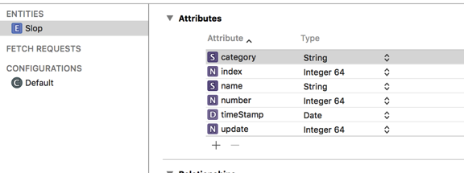
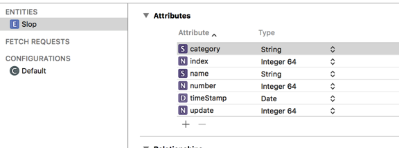

Design Patterns in Swift
2015/11/30 22:28
Machine Learning References
2015/11/24 08:45
Lasso
http://web.stanford.edu/~hastie/Papers/B67.2%20%282005%29%20301-320%20Zou%20&%20Hastie.pdf
http://www.cs.nyu.edu/~mohri/mlu/mlu_lecture_3.pdf
http://colah.github.io/posts/2015-08-Understanding-LSTMs/
Neural Network and Deep Learning
http://neuralnetworksanddeeplearning.com/
Linear Algebra
https://www.math.ucdavis.edu/~linear/linear-guest.pdf
Andrew Ng
http://openclassroom.stanford.edu/MainFolder/CoursePage.php?course=MachineLearning
https://www.quora.com/What-are-the-top-10-data-mining-or-machine-learning-algorithms/answer/Xavier-Amatriain

http://web.stanford.edu/~hastie/Papers/B67.2%20%282005%29%20301-320%20Zou%20&%20Hastie.pdf
http://www.cs.nyu.edu/~mohri/mlu/mlu_lecture_3.pdf
http://colah.github.io/posts/2015-08-Understanding-LSTMs/
Neural Network and Deep Learning
http://neuralnetworksanddeeplearning.com/
Linear Algebra
https://www.math.ucdavis.edu/~linear/linear-guest.pdf
Andrew Ng
http://openclassroom.stanford.edu/MainFolder/CoursePage.php?course=MachineLearning
https://www.quora.com/What-are-the-top-10-data-mining-or-machine-learning-algorithms/answer/Xavier-Amatriain

Protocols
2015/11/19 09:53
TableViews
2015/11/17 21:57
It's probably worth viewing the raywenderlich.com video's on tableviews:
http://www.raywenderlich.com/119628/new-video-tutorial-series-table-views
http://www.raywenderlich.com/119628/new-video-tutorial-series-table-views
Swift Stuff
2015/11/17 09:05
Interesting note… dynamic dispatch happens automatically unless you declare a class or method final?
https://developer.apple.com/swift/blog/?id=27
https://developer.apple.com/swift/blog/?id=27
TensorFlow
2015/11/17 08:39
Softmax
http://cs229.stanford.edu/notes/cs229-notes1.pdf
TensorFlow tutorials
https://github.com/nlintz/TensorFlow-Tutorials
Core Data
2015/11/17 08:39
Okay. Back to looking at core data in swift.
Sometimes you just want a very quick way of adding and deleting core data…hmm, was certainly thinking of something a bit simpler. But, okay, this is evolving.

This was the original. It's a bit simpler, and doesn't have all the attributes listed above.
These are some really good tutorials
http://www.raywenderlich.com/113995/video-tutorial-intermediate-core-data-part-1-core-data-stack
Sometimes you just want a very quick way of adding and deleting core data…hmm, was certainly thinking of something a bit simpler. But, okay, this is evolving.

This was the original. It's a bit simpler, and doesn't have all the attributes listed above.
These are some really good tutorials
http://www.raywenderlich.com/113995/video-tutorial-intermediate-core-data-part-1-core-data-stack
Xcode 7.2 beta 3
2015/11/16 21:11
Looks like Xcode 7.2 beta 3 is out…downloading it. It would be nice to setup this version as the backup, and Xcode 7.1.1
as the default application that gets loaded. Yeah, I saw some postings on stack overflow; but, they don't seem to solve the problem.
as the default application that gets loaded. Yeah, I saw some postings on stack overflow; but, they don't seem to solve the problem.